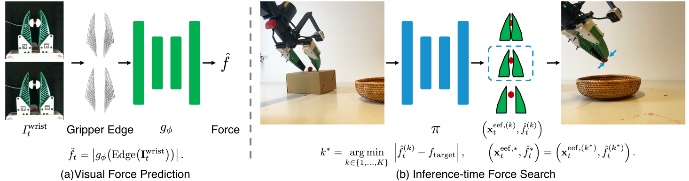

VisualForce: Robot Learning
with Visual Predicted Force
1Harvard University2MIT3University of Pennsylvania4Stanford University
* Equal contribution
Abstract
Force-aware manipulation typically relies on specialized force or tactile sensors. We show that force-aware manipulation can instead be achieved through visual force prediction from the deformation of a compliant Fin Ray gripper. Our approach trains two models. First, we train a visual force estimator on calibration data and use it to annotate task demonstrations with force estimates. Second, we train an action–force proposal policy on these force-augmented demonstrations to jointly generate candidate robot actions and their associated forces. At test time, we sample candidate actions and the forces they are expected to produce, then execute the action whose predicted force is closest to a target from the demonstrations. We evaluate our approach on berry picking, empty-can grasping, in-hand reorientation, and plug insertion. Our results show that visual force prediction can guide inference-time action selection for contact-rich manipulation without requiring force or tactile sensors at deployment.
Why force matters
A berry can be crushed. An empty can can dent. A plug can slip before it is fully inserted. Successful manipulation depends on applying the right force for the task.
We use an existing compliant Fin Ray gripper design. A wrist camera captures its deformation under contact, providing a visual signal for learning force-aware behavior.
Method
Two learned models connect what the gripper looks like to the action the robot takes.
- 01 · Calibration
Learn to read deformation
Pair wrist-camera images with reference force measurements. Train a visual estimator on masked gripper edges.
- 02 · Policy training
Give demonstrations force labels
Use the frozen estimator to annotate task demonstrations. Train a policy to jointly generate actions and their associated forces.
- 03 · Deployment
Sample, select, execute
Sample 32 action–force pairs. Execute the action whose predicted force is closest to a target from task demonstrations.

At deployment, the policy uses wrist RGB, side-view RGB, and robot state. Its generated force values guide selection; only the chosen action is sent to the robot.
See force through deformation
Interactive illustrationIncrease the gripping force and watch the compliant fingers bend around an object. The dashed outline shows their unloaded shape.
Watch the fingers’ outline and internal ribs change as the load increases.
The shape change illustrates the visual cue; the slider values are illustrative loads, not calibrated measurements or model predictions. In VisualForce, masked Sobel edges reveal the fingers’ internal ribs and shape. The estimator learns signed axial force from reference measurements; its magnitude is used to label demonstrations. Explore recorded force estimates ↓
Interactive Force Search
Recorded candidates · Empty-can graspingThe policy proposes 32 possible actions, each paired with a predicted force. Force search executes the action whose force is closest to the target.
- 1Set a target force
- 2Compare 32 predictions
- 3Execute the closest match
Left to right: increasing predicted force. Vertical scatter only separates the candidates.
Loading the recorded candidates…
These are the 32 recorded policy predictions used in Figure 8. The saved target is 3.04 N; changing it explores selection among the same candidates, not a new robot rollout. Forces are predictions, not measured outcomes. Download candidate data.
What happens on the real robot?
The target is chosen from task demonstrations. The policy jointly generates actions and forces; the visual force estimator does not score candidates at deployment. Only the selected end-effector action is sent to the robot. The selected force is used for choosing the action, not sent as a force command. See Section III-D and Algorithm 1.
Real-World Experiments
Choose a task to compare single-sample policy inference with force search using the same trained checkpoint.
Plug insertion
Keep a secure grip on the plug while inserting it into the socket.
15 trials per method
Success rates from the paper
Playback speeds vary for presentation;
clip lengths do not reflect task completion times.
Results
Force search improves success on all four evaluated tasks. Both methods use the same checkpoint and initial-condition distribution.
| Task | Policy · single sample | VisualForce · force search |
|---|---|---|
| Empty-can grasping | 46.7% | 86.7% |
| Berry picking | 0.0% | 73.3% |
| In-hand reorientation | 6.7% | 46.7% |
| Plug insertion | 26.7% | 73.3% |
Force-estimation accuracy
Mean episode force-estimation error across three held-out episodes (442 frames), with equal episode weighting. Figure 4 ↗
Motor current MAE
Visual force MAE
Measured and predicted force over time
Drag the time slider to inspect the reference measurement and visual force estimate at each recorded sample.
One recorded sequence from Figure 4(b). The 0.91 N MAE above summarizes three held-out episodes with equal episode weighting, not this sequence alone. Synchronized wrist-camera frames are not included.
Loading the recorded force samples…
Additional Details
Scope and limitations
The method uses a task-specific target force obtained from demonstrations and estimates only axial gripping force, rather than a full contact wrench. Reference sensors provide calibration supervision, but are not required during manipulation deployment. Action selection relies on policy-generated force values without online visual force feedback, which limits correction of prediction errors and unexpected contact disturbances.
Citation
@misc{chen2026visualforce,
title = {Robot Learning with Visual Predicted Force},
author = {Chen, Haonan and Wu, Feiyang and Ma, Yuxiang and
Mete, Mustafa and Ye, Pengfei and Shen, Junxuan and
Zhu, Cheng and Ruggeri, Aurora and Cheung, Kelvin and
Mao, Jiayuan and Adelson, Edward and Wu, Jiajun and
Howe, Robert D. and Du, Yilun},
year = {2026},
note = {Manuscript}
}Manuscript citation; publication details will be updated when available.